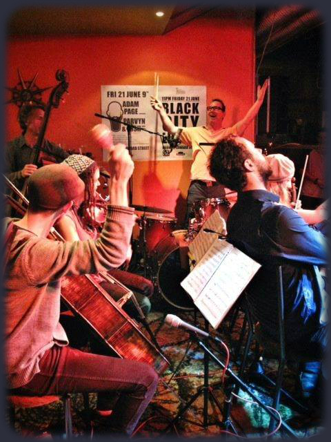

The Troubles play 21st century jazz and are New Zealand's leading contemporary jazz group.
Over a long residency in New Zealand's capital city of Wellington, The Troubles developed and honed their quasi-anarchistic brand of meticulously composed music. From the coarse to the sublime, the emotive to the absurd, their music is inventive, passionate, honest, and wholly life affirming.
They are led by John Rae, a drummer hailing from Edinburgh, and one of Scotland's best known and loved jazz musicians who has been living in New Zealand for the past nine years. A previous Creative New Zealand/Victoria University Composer-in-Residence, John has had a career playing drums and composing alongside some of the world's best, as well as leading his own groups of Celtic inspired jazz.
The distinct sound of The Troubles is in no small part due to the unique line up of the group. Featuring a string quartet of Tristan Carter, Hannah Fraser (violin), Megan Ward (viola) and Charley Davenport (cello), they help give The Troubles their distinct sound that is giving pleasure to audiences around the world.
Kiwi jazz legend Patrick Bleakley on acoustic bass is the anchor of the group and has a lifetime of experience playing with New Zealand legends from Blerta to Jonathan Crayford.
The Troubles have featured some of New Zealand's finest jazz musicians including Roger Manins, Lex French, Lucian Johnson, Tim Hopkins, Reuben Derrick, Jeff Henderson and many more as they continue to push musical boundaries.